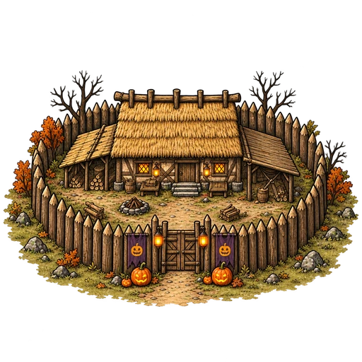
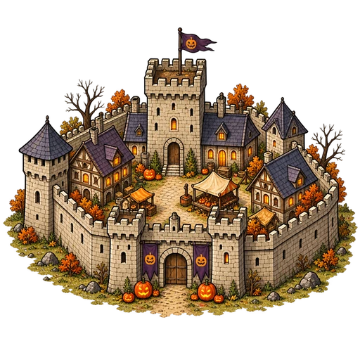
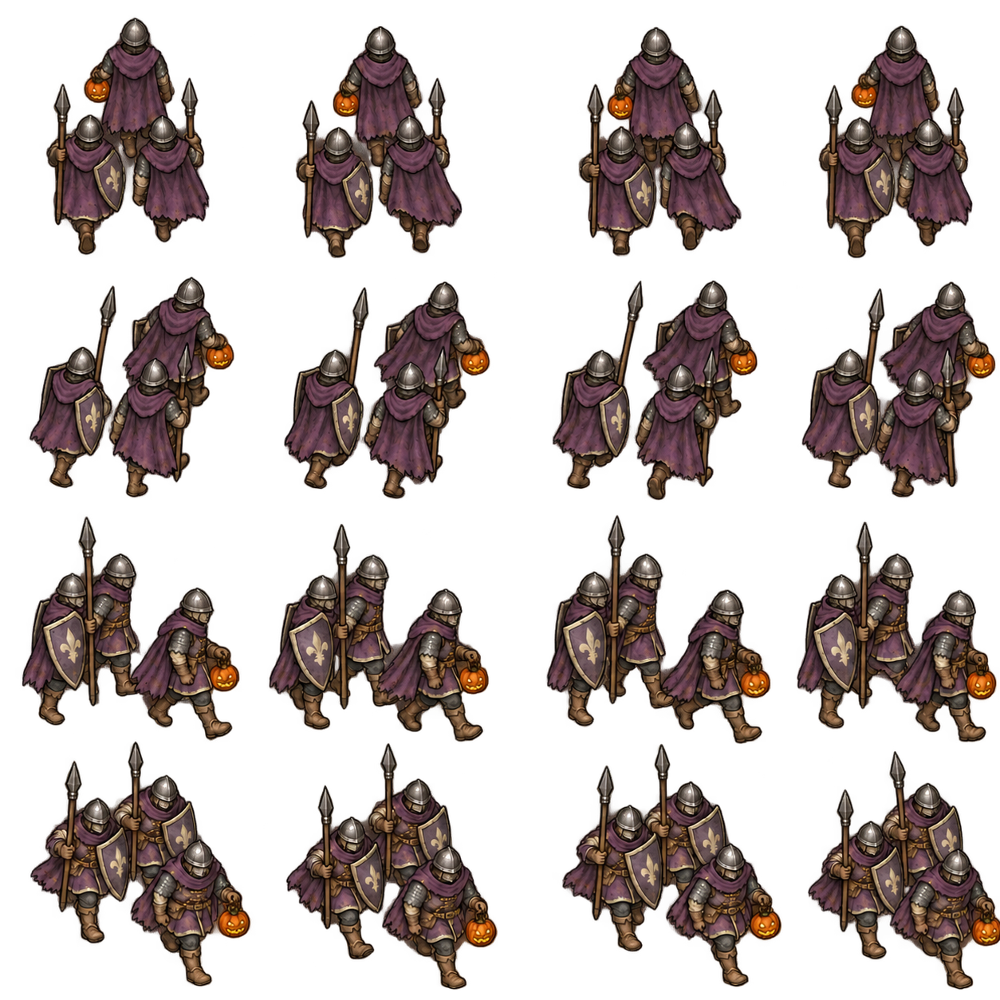

CROWNLANDS · HALLOWEEN COLLECTION
Halloween March
Follow the march
Front, side and back views along the route.

Thornford
Wyvernhollow
12.5K18m 20s
Choose a direction
Tap a view to see its walking animation on the map.
Map readability
The count, mission and timer stay upright as the troops turn. Scouts retain their separate marker.
64 px · Distant view
88 px · Proposed map size